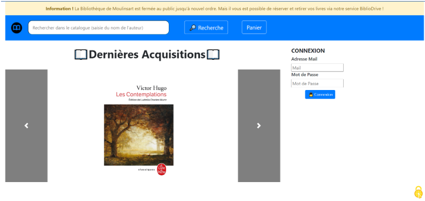
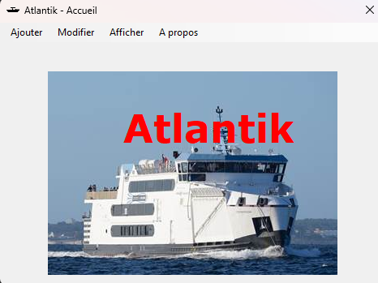

Projets liés au BTS SIO

BiblioDrive
Projets réalisé lors de la première année de mon BTS SIO.
Consistant à créer une plateforme en ligne pour une bibliothèque permettant aux utilisateurs d'emprunter des livres en ligne.
Développée en HTML, CSS et PHP. Et pour les données j'ai utilisé une base de données MySQL.

Atlantik
Projets réalisé lors de la première année de mon BTS SIO.